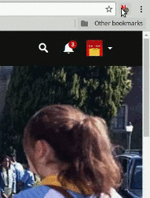

Select services from which the ratings will be displayed::
Select the default service from which ratings will be displayed on main page:
Color circles with the ratings:
Reload Netflix.com after modfifications
Since Netflix replaced stars with a thumbs rating system, it has become very painful to find interesting stuff. This Open Source extension enriches netflix browser with a rating based on the scores from IMDb.com, FilmWeb.pl, Metacritic.com, Nflix.pl, TheMovieDB.org, RottenTomatoes.com, FilmAffinity.com and Trakt.TV sites. Source code and issue tracking system available on GitHub.
Rate "Film scores for Netflix" in Chrome Web Store or Firefox Add-ons .
Check out this video to learn how you can contribute to delivering more relevant ratings.
Please be aware that if you use Netflix in a language other than English, there can be a lot of mismatches in the ratings. Our observations show that while with TheMovieDb and IMDb the extension is doing quite well, for the other services it may be not possible to automatically find the correct rating.
TraktTv ratings added thanks to @Jose-Nogueira! Fixed problem with FilmWeb ratings.
Once more, thanks to @elchenberg, we've got FilmAffinity rating available!
Rotten Tomatoes ratings! Big thanks for @elchenberg!
Metacritic ratings fixed (thx @elchenberg), new mappings.
First release after over a year. Fixes for the new Netflix layout. Remaining problems: Filmweb and Metacritic not working :(
You can enable coloring of the rating circles on the home main: green for a rating above 7.5, yellow for a rating above 5, red for a rating below 5.
Changed extension description, due to Web Store policy. Nie links to imdb, themoviedb, metacritic and filmweb.
Configuration window after first installation. Fixed locale. Fixes for IMDb.
Fixed problem with Metacritic ratings.
New links to imdb, themoviedb, metacritic and filmweb.
Fixed problem with IMDb ratings.
Ratings from Nflix.pl are back.
Bringing one of the most demanded feature. You can now turn of undesirable ratings:

Fixed problem with new titles.
Fixed finding title in the main page.
Prevent from interfering with pointer events. New links to imdb, themoviedb, metacritic and filmweb.
Fixes for IMDb and Metacritic. New links to imdb, themoviedb, metacritic and filmweb.
Displaying scores in local format.
Fixed displaying ratings for Netflix Originals. New links to imdb, themoviedb, metacritic and filmweb.
New links to imdb, themoviedb, metacritic and filmweb.
Hotfix due to changes on netflix website.
Fixed matching titles from Filmweb and IMDb. New links to imdb, themoviedb, metacritic and filmweb.
(Beta) TheMovieDB.org ratings available!
Another new links to imdb, metacritic and filmweb
Source code refactoring. Several bugfixes.
Another changes on Filmweb site.
Fixed due to changes on Filmweb site. Better IMDd searching.
Another new links to imdb, metacritic and filmweb
Reporting links to websites without ratings (i.e. new titles). Related titles button.
Another new links to imdb, metacritic and filmweb
Updating ratings when details about title are displayed
Just few new links to imdb, metacritic and filmweb
Ratings from IMDb are finally available!
(1) Metacritic ratings may be enabled on the main Netflix browser page. (2) Check the titles with the highest ratings using the extension button (top right corner of the browser).
From now on, you can correct wrong ratings and links (Filmweb and Metacritic) and share this information with other users (more info).
Only new mappings for Filmweb and Metacritic
Hotfix due to changes on netflix website.
Beta support for metacritic.com! Currently only in details box. Low efficiency of matching ratings, when the netflix service is set to non-English version.
Just few new links with filmweb
Fixed ratings on www.netflix.com/title... Links to filmweb search website in case of unrecognized title
Popup menu on Filmweb site allows to report its link with Netflix film/series. Several bug fixes.
Quick fix of the reporting issue.
Fixed mapping Netflix on Filmweb for dozen films. Minor bug fixes.
Displaying ratings on www.netflix.com/title...
Help page.
Ability to report incorrect links to Filmweb website.
Update due to netflix site modification.
Opera and Firefox port.
Link to nflix.pl. Fixed problems with displaying film ratings.
Displaying scores on details boxes (both bob/small and jaw/big). Link to filmweb site.
Ratings from the Filmweb page are retrieved using search engine that does not always identify the film correctly. If you notice that the link to the Filmweb is incorrect, you can report it by pressing the red button .
Odkąd Netflix zmienił system oceniania filmów z gwiazdek na system rekomendacji "łapka w górę/dół", wyszukiwanie wartościowych pozycji stało się... utrudnione. To rozszerzenie przywraca ocenę poszczególnych filmów i seriali na strony Netfliksa. Prezentowany ranking pochodzi z największego polskiego serwisu poświeconego filmom - FilmWeb.pl, oraz z serwisów Metacritic, IMDb, Nflix.pl oraz TheMovieDB.org.
Rozszerzenie jest dostępne na zasadach Open Source, kod źródłowy i system zgłaszania uwag dostęþny jest w serwisie GitHub.
Oceń rozszerzenie "Film scores for Netflix" w Sklepie Chrome (Web Store) lub Firefox Add-ons .
Obejrzyj film, w którym wyjaśniamy jak możesz pomóc w dostarczaniu bardziej trafnych ocen.
Oceny filmów z serwisu Filmweb są pobierane automatycznie za pomocą udostępnionej wyszukiwarki. Czasami, zwłaszcza w przypadku nowości, mechanizm ten nie sprawdza się i wyświetlane są dane innych filmów lub seriali. Teraz za pomocą czerwonego przycisku w łatwy sposób można zgłosić problem. W kolejnej wersji wtyczki dane zostaną skorygowane..